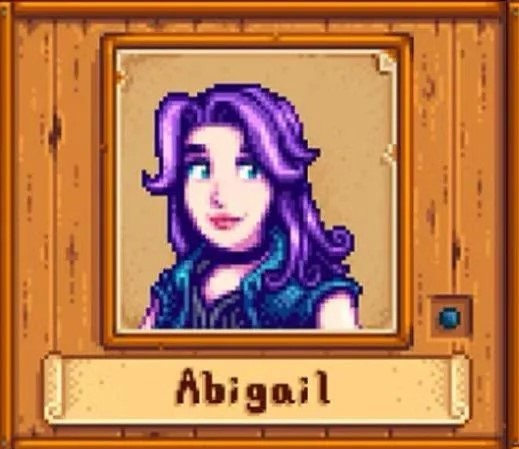
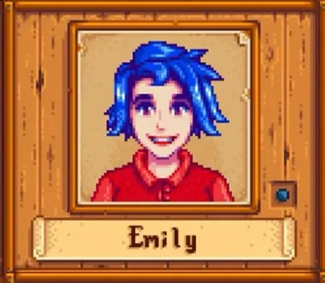
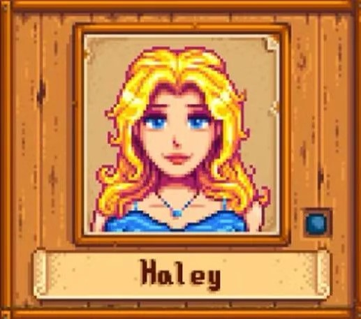
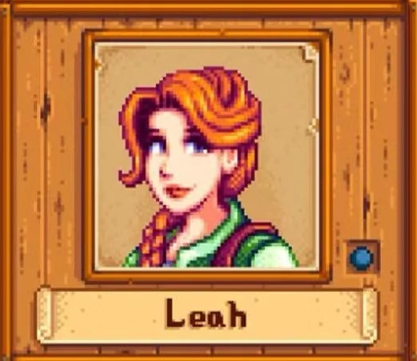
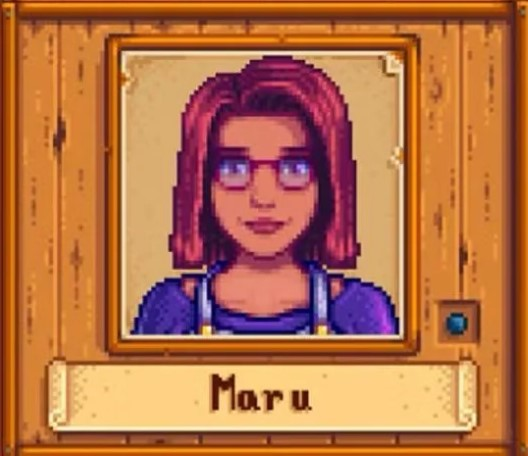
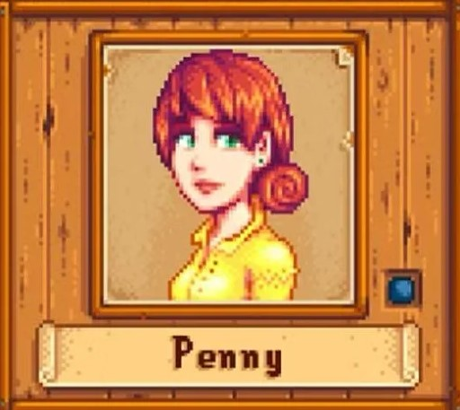

THE BACHELORETTES❤
Click the heart to favorite!

YOUR FAVORITE? ❤
Favorite Items:
Family:
-Emily-
Emily lives with her sister, Haley, and together they care for their parents' home, who have been traveling the world for the past two years. She works with Gus, who employs her part-time at The Stardrop Saloon. There, she works most evenings to make ends meet. However, her real passion is tailoring— often making her clothes from scratch.
Birthday: Spring 27
Clinic Visit: Winter 11
Favorite Items:
- Amethyst
- Aquamarine
- Cloth
- Emerald
- Jade
- Parrot Egg
- Ruby
- Survival Burger
- Topaz
- Wool
Family:
- Haley (Sister)
Address: 2 Willow Lane

YOUR FAVORITE? ❤

YOUR FAVORITE? ❤
-Haley-
Haley loves taking photos with her camera and keeping up with all the latest fashion trends. Being wealthy and popular throughout high school has made her a little conceited and self-centered. She can also be quite judgemental toward others. But is it too late for her to discover a deeper meaning to life? Is there a fun, open-minded young woman hidden within that candy-coated shell?
Birthday: Spring 14
Clinic Visit: Winter 9
Favorite Items:
- Coconut
- Fruit Salad
- Pink Cake
- Sunflower
Family:
- Emily (Sister)
Address: 2 Willow Lane
-Leah-
Leah lives alone in a small cabin just outside of town. She thinks she doesn't have many friends there. She moved from the city to Stardew Valley to pursue her dream of being an artist. She loves to spend time outside, to forage for a wild meal, or to simply enjoy the gifts of the season. She’s a skilled artist with a large portfolio of work… yet she’s too nervous to display it to the public. Maybe you can give her a little confidence boost?
Birthday: Winter 23
Clinic Visit: Spring 16
Favorite Items:
- Goat Cheese
- Poppyseed Muffin
- Salad
- Stir Fry
- Truffle
- Vegetable Medley
- Wine
Family: N/A
Address: Leah's Cottage

YOUR FAVORITE? ❤

YOUR FAVORITE? ❤
-Maru-
Growing up with a carpenter and a scientist for parents, Maru acquired a passion for creating gadgets at a young age. When she isn’t in her room, fiddling with tools and machinery, she sometimes does odd jobs at the local clinic. She works for Harvey at the clinic, and both worry that it doesn't receive enough patients.
Birthday: Summer 10
Clinic Visit: N/A (Works at the clinic)
Favorite Items:
- Battery Pack
- Cauliflower
- Cheese Cauliflower
- Diamond
- Dwarf Gadget
- Gold Bar
- Iridium Bar
- Miner's Treat
- Pepper Poppers
- Radioactive Bar
- Rhubarb Pie
- Strawberry
Family:
- Demetrius (Father)
- Robin (Mother)
- Sebastian (Half-Brother)
Address: 24 Mountain Road
-Penny-
Penny lives with her mom, Pam, in a little trailer by the river. She quietly tends to her chores in the dim, stuffy room she is forced to call home, all while her mom is away, carousing at the saloon. Penny is shy and modest, without any grand ambitions for life other than settling in and starting a family. She likes to cook (although her skills are questionable) and read books from the local library.
Birthday: Fall 2
Clinic Visit: Winter 4
Favorite Items:
- Diamond
- Emerald
- Melon
- Poppy
- Poppyseed Muffin
- Red Plate
- Roots Platter
- Sandfish
- Tom Kha Soup
Family:
- Pam (Mother)
Address: Trailer

YOUR FAVORITE? ❤